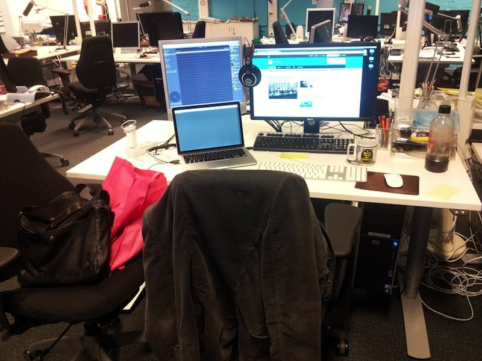
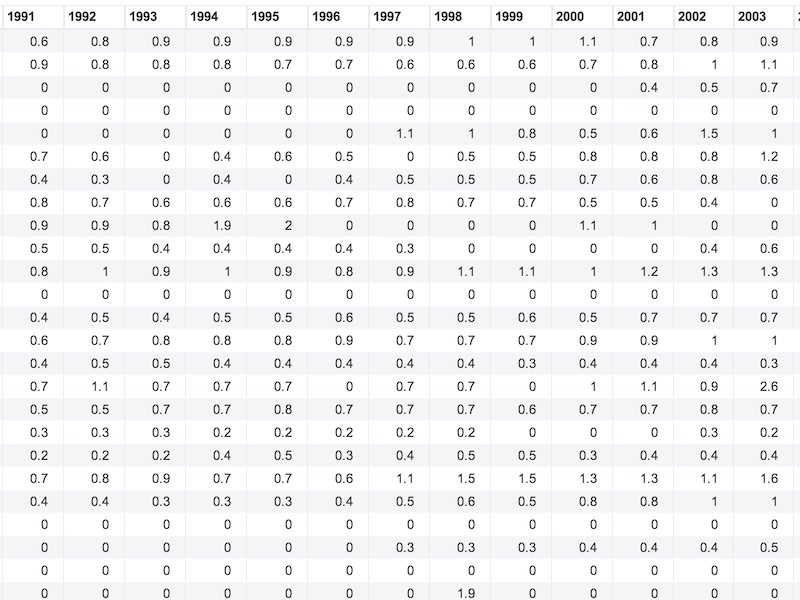
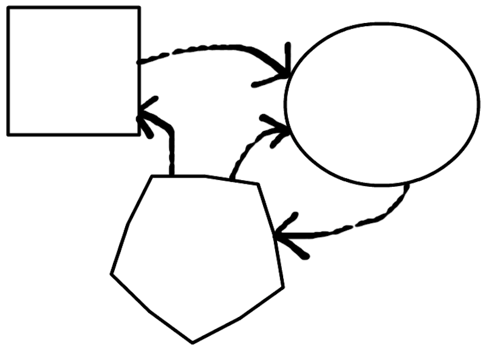
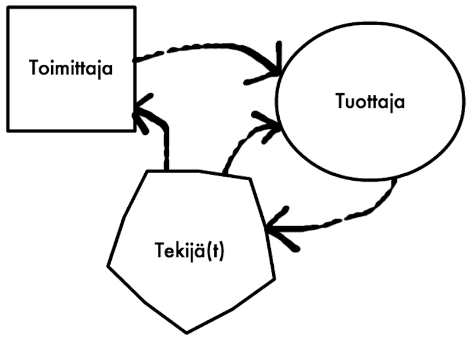
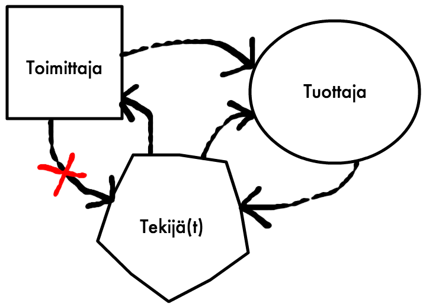
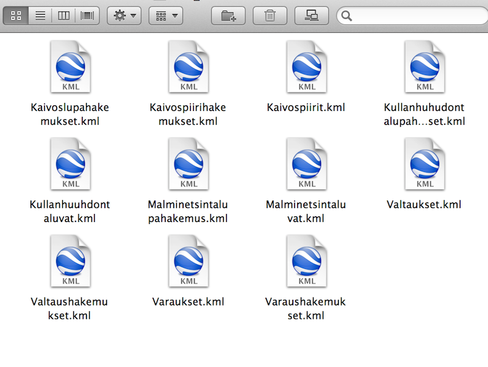
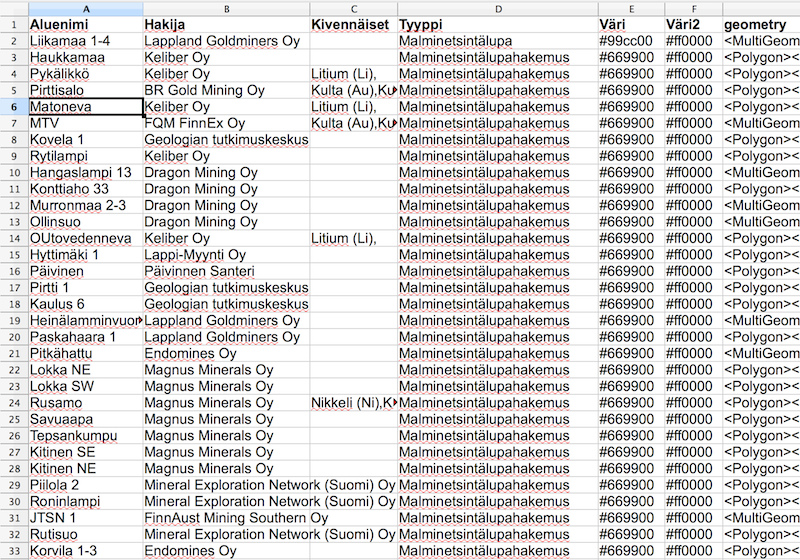

Haluatko Datajournalistiksi


Teemo Tebest






Luettelo Suomen kunnista
→ Scraper → Google Spreadsheed
→ Scraper → Google Spreadsheed
- Datan siivous
- Datan yhdistäminen
- Karttavisualisointi
Mitä muuta?
Kiitos!
Kysymyksiä?